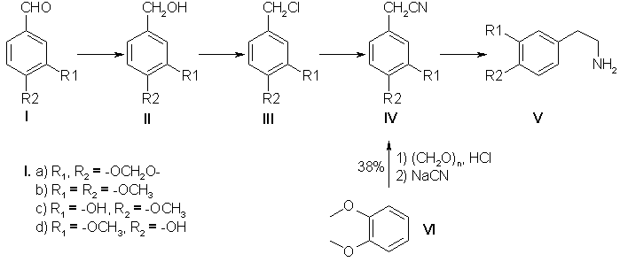
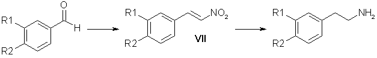

Preparation of Substituted Phenethylaminesby V. I. Vinogradova et. al.Translated from Khimiya Prirodnykh Soedinenii, No. 1, pp. 67-74 (1990). [ Back to the Chemistry Archive ] Abstract
Phenylethylamine derivatives possess a broad spectrum of biological activity and fulfill an important function in animal metabolism [1]. Synthetic beta-phenylethylamines are the key substances in the synthesis of a number of isoquinoline alkaloids: 1-benzylisoquinolines, N-benzylisoquinolines, aporphines, and diisoquinolines [2]. Despite the large number of publications devoted to the synthesis of beta-phenylethylamines, this problem has hitherto remained unsolved. In the present paper we give the results of a search for an effective and extremely accessible method of synthesizing substituted beta-phenylethylamines. Scheme 1 Of known methods, the greatest attention has been attracted by two fundamentally different schemes of obtaining amines: via nitriles (Scheme 1) and via nitrostyrenes (Scheme 2). Judging from information in the literature, neither possesses a clear advantage, and we have therefore performed the synthesis of a number of amines by both schemes, carrying out the optimization and modification of the individual processes. The industrial production of papaverine includes the synthesis of 3,4-dimethoxyphenylacetonitrile (IVb) from veratrole (VI) in 38% yield [3]. The low yield of the desired nitrile induced us to use the aldehydes (1a-d) instead of the ether (VI) as the starting material. The alcohols (II) were obtained by the method of reducing the aldehydes (I) with sodium borohydride which is widely used in the laboratory (yield 98%) [4], and also by a method [5] using copper chromite in a current of hydrogen, which enables the reaction to be performed on a large scale. The results of the reduction of piperonal over copper chromite are given below:
The best results were obtained on the hydrogenation of piperonal at 170�C under a pressure of 230 atm. Similar yields were given by the reduction of veratraldehyde (Ib), while it was impossible to obtain isovanillyl alcohol (IIc) by this method in satisfactory yields. The further transformation of the alcohols (II) into the nitriles (IV) was carried out as described in [4] with 65-81% yields calculated on the initial aldehydes. Thus, the yields of the nitriles (IV) from the aldehydes (1) were twice as great as the yield of nitrile (IVb) from veratrole (VI) (Scheme 1). The subsequent reduction of the 3,4-methylenedioxyphenylacetonitrile (IVa) obtained to the amine (Va) was performed by analogy with the industrial hydrogenation of (IVb) [3] over a skeletal nickel catalyst in alcohol and alcoholic ammonia at elevated pressures and temperatures. The results of the catalytic hydrogenation of homopiperonylonitrile are given below:
(*) 2N solution of ammonia in ethanol. The best yield of homopiperonylamine (Va) was 68-73%, but the product obtained was contaminated with secondary amines, which complicated its purification and lowered the yield of the desired amine (Va). It was impossible to increase the yield either by varying the ratio of the reactants or by changing the other parameters. We obtained good results by using as the reducing agent diisobutylaluminum hydride (DIBAH) [6] and diisobutyllithioaluminum hydride (DILAH). With the reverse order of performing the reaction, when the DIBAH was added to the nitrile (IVa) the best yields were obtained with the use of ether and tetrahydrofuran (THF) as solvents at a ratio of nitrile (IVa) to DIBAH of 1:5 (Table 1). When a solution of the nitrile (IVa) was added dropwise to DIBAH (direct order), the yield of amine increased by 10-15% (Table 1). This is probably due to the fact that in the reverse order of performing the reaction the deficiency of the DIBAH at the beginning of the reaction leads to the formation of by-products from the N-alumoimine. A synthesis of homoveratrylamine (Vb) based on the electrocatalytic reduction of the nitrile (IVb) with 96% yield has been proposed fairly recently. Such a yield of the amine (Vb) (96%, GLC) is comparable with the yield of homopiperonylamine [82-88% of the hydrochloride of (Va) was isolated] that we obtained on reduction with DIBAH. Scheme 2 Of other variants of the preparation of substituted beta-phenylethylamines attention is attracted by a route through the reduction of nitrostyrenes which is shorter than the first (Scheme 1) and avoids working with sodium cyanide. Table 1. Reduction of Homopiperonylonitrile (IVa)
Table 2. Preparation of the Nitrostyrenes (VII)
* A) Catalyst 16-20% methanolic methylamine, B) 70% aqueous ethylamine, C) 44% KOH in EtOH/H2O 1:1, D) Ammonium acetate ** Yield of nitrostyrene contaminated with high molecular mass products. The preparation of the nitrostyrene (VII) is described in detail in the literature [8-11] and information is given on the advantage of the method using ammonium acetate [8]; however, the results of other authors [1,9] contradict these conclusions. We have compared the yields of nitrostyrenes that we obtained in the condensation of aldehydes (Ia) and (Ib) with nitromethane catalyzed by methylamine (method A) [8], by ethylamine (method B) [9], by a solution of caustic soda (method C) [10], and by ammonium acetate (method D) [8, 11]. The most stable results were obtained when the reaction was performed by method D (Table 2). In spite of the high yields of reaction products, methods A, B, and C were inefficient. The substances (VIIa) and (VIIb) synthesized by these methods were contaminated to different degrees by high-melting polymeric products which interfered with their purification. Method D gave the required nitrostyrene with a yield of 70-80% without perceptible contamination by high-molecular-mass products. According to the literature, the passage from the nitrostyrenes (VII) to amines can be effected by reduction with lithium aluminium hydride [11,12], sodium bis(2-methoxyethoxy)aluminum hydride [13], amalgamated zinc dust [14], and hydrogenation over Raney nickel [15] or a palladium catalyst [1,16], etc. We have performed a series of experiments (more than 50) on the hydrogenation of the nitrostyrenes (VIIa) and (VIIb) over Raney nickel at elevated temperatures (50-70�C) and pressures (110-120 atm) in various solvents (acetic acid, methanol, and mixtures of methanol and acetic acid in ratios of 4:1, 3:1, and 2:1). The results of the experiments showed that the yields of amines obtained by this method range from 30 to 60%. We obtained good results in the reduction of nitrostyrenes by LiAlH4 in ether-tetrahydrofuran solution [17]. However, these yields were not stable [for (VIIa) they ranged from 25 to 70%, and for (VIIb) from 50 to 85%]. The use of THF alone as solvent lowered the yields of the amines (Va) and (Vb) to 30%, while in benzene, because of pronounced resinification, the yields did not exceed 10-15%. Performing the reaction in dioxane [9] shortened it from 12-20 h to 3 h and gave the amine (Va) with a yield of 50%. Table 3. Reduction of 3,4-Methylenedioxynitrostyrene (VIIa)
* Feed of nitrostyrene by boiling ether from a Soxhlet instrument. Attempting to find another method of reducing nitrostyrenes, we carried out a number of search investigations. Attempts to reduce the nitrostyrenes (VIIa) and (VIIb) by means of sodium borohydride with the addition both of nickel chloride [18] and Raney nickel did not give satisfactory results. When the reaction was performed in an ammoniacal medium with ferrous sulfate, pronounced resinification took place [the yield amounted to 10% for the amine (Va)]. When the nitrostyrene (VIIa) was reduced with Raney alloy [19] in 10 and 15% aqueous caustic soda, the amine (Va) was obtained with yields of 15 and 10%, respectively. The use of 20% aqueous caustic soda in methanol did not increase the yield of amine. An effective reagent for the reduction of nitrostyrenes proved to be diisobutylaluminum hydride, which we are the first to have used for these purposes. In the search for the optimum conditions of performing the reaction, we used the direct (DO) and reverse (RO) orders of adding the DIBAH. This was dictated by the poor solubility of the nitrostyrenes (VII) in organic solvents. The reverse order is convenient technologically, since a solution of the reducing agent is added to a suspension. However, a detailed investigation of the reaction products (Table 3) showed that this method gives a mixture of primary and secondary amines. With the direct order of performing the reaction, the desired amine (Va) was obtained with a yield that depended directly on the solubility of the initial nitrostyrene in the solvent. The best yield (at an equal ratio of the reactants) was obtained in dioxane (Table 3). Under similar conditions, in THF the amine (Va) was obtained in 60% yield while an increase in the amount of DIBAH (1:10) led to an 85% yield. Similar results (80%) were obtained on the reduction by DIBAH of 3,4-dimethoxynitrostyrene (VIIb). The yields of amines containing phenolic hydroxy groups (Vc) and (Vd) did not exceed 45-50%, which is connected with difficulties in the isolation of the amines from the reaction mixture. The use of DILAH enabled the amount of reducing agent used to be decreased both in the reactions with nitriles (Table 1) and with nitrostyrenes (Table 3). An analysis of the experimental results given above shows that the proposed method of obtaining amines by Scheme 2 through the stage of reducing nitrostyrenes with DIBAH has advantages over other methods - a stable 60-65% yield, calculated on the initial aldehyde, and a relatively short time of each reaction in the two-stage process. ExperimentalPreparation of 3,4-Disubstituted Benzyl Alcohols (II). A. To a solution of 100 g of the aldehyde (I) in 1000 ml of methanol was added 40 g of NaBH4 in the course of 5 h. The mixture was left overnight. After the solvent had been distilled off, the residue was mixed with water and extracted with chloroform. The extract was washed twice with water and was dried with Na2SO4. The residue after the solvent had been driven off was the required alcohol. Yield 98%. B. A 500-ml autoclave was charged with 45 g of piperonal (Ia), 35 ml of dioxane, and 3 g of copper chromite obtained by the method of [20]. Reduction was carried out in a rotating autoclave at a pressure of 180-230 atm and a temperature of 170-175�C for 2 h. For yields, see above. The reaction mixture was filtered and the mother solution was evaporated. The residue was mixed with water and extracted with ether. The ethereal extract was washed with water and dried with Na2SO4. After the solvent had been driven off, the residue was distilled in vacuum.
The chlorination of the alcohols (IIa and b) with thionyl chloride in absolute benzene followed by the replacement of the chlorine by a cyano group was carried out by the method of [4].
Hydrogenation of the Nitrile (IVa) over Raney Nickel. A 200-ml rotating autoclave was charged with 12 g of the nitrile (IVa), 4 g of Raney nickel (16 g of NaOH, 12.5 g of Ni-Al alloy, 60 ml of H20 in 60 ml of ethanol). The reaction was performed at 80�C in a current of hydrogen under a pressure of 100 atm for 4 h. After cooling, the solution was filtered and the ethanol was distilled off. The residue was treated with ammonia and was extracted with ether. The ethereal extracts were dried with Na2SO4. After the solvent had been distilled off, the residue was dissolved in acetone and the hydrochloride of (Va) was obtained. For yield, see table above. Hydrochloride of (Va), mp 223-225�C. Reduction of the Nitrile (IV) with DIBAH A. Direct Order of Mixing the Reactants. Dropwise, 10 ml of THF was added to 25 ml of 72% DIBAH (0.1 mmole). With careful stirring in a current of argon, 3.2 g (0.02 mole) of the nitrite (IVa) in 40 ml of THF was added to the resulting complex over 1 h. The reaction mixture was heated at 60�C for 3 h and was then cooled and was decomposed first with moist ether and then with ethanol and water. The resulting gel was treated with 20% caustic potash. The amine (Va) was extracted with ether. The ethereal extracts were dried with K2C03 and the solvent was distilled off, and the residue was treated with acetone and with concentrated HCl to pH 5. The hydrochloride of amine (Va) that precipitated was filtered off. Yield 3.2 g (80%). B. Reverse Order of Mixing the Reactants. Dropwise, 25.5 ml (0.1 mmole) of DIBAH was added to 3.37 g (0.021 mole) of the nitrile (IVa) in 50 ml of dry ether. The reaction mixture was boiled under reflux for 3 h. Decomposition and the working up of the reaction products were carried out as described above. Preparation of the Nitrostyrenes (VII). Method A. A mixture of 7.2 g of piperonal, 3 ml of nitromethane, 1 ml of a 20% solution of methylamine in methanol, and 14 ml of methanol was left at room temperature for 18 h. The precipitate that had formed was separated off. This gave 9.6 g of a product with mp 205�C. After recrystallization from acetic acid 4.5 g (47% yield) of the nitrostyrene (VIla) was obtained with mp 153-154�C. Method B. A solution of veratraldehyde (99.6 g, 0.6 mole) in 200 ml of methanol was treated with 35 ml (0.64 mole) of nitromethane and 2 ml of 70% aqueous ethylamine. The reaction mixture was kept at room temperature for 2 days. The precipitate of the nitrostyrene (VIIb) that had deposited was separated off. Yield 114 g (91%); after recrystallization, 60%. Method C. At 0�C, 15 ml of nitromethane was added to a solution of 18.65 g (0.124 mole) of piperonal in 150 ml of ethanol, and then 16 g of caustic potash in 36 ml of aqueous ethanol (1:1) was added dropwise over 30 min. The mixture was left in the ice bath for 1 h and was then poured into a solution of hydrochloric acid (30 ml of concentrated HCl and 30 ml of H20). The precipitate obtained was separated off. In this way, 8 g of the nitrostyrene (VIIa) was obtained. Yield 33%. Method D. A mixture of 15 g of piperonal, 7.8 g of ammonium acetate, 77 ml of glacial acetic acid, and 13 ml of nitromethane was boiled under reflux for 1 h 45 min. The precipitate that deposited was separated off, and the mother liquor was poured onto ice. This gave 16.8 g of the nitrostyrene (VIIa). Yield 87%, mp 153-154�C. Preparation of the Amines (V) from the Nitrostyrenes (VII). Direct Order of Mixing the Reactants. With vigorous stirring in a current of argon, 20 ml of dioxane was added dropwise to 34 ml of 72% DIBAH. Then over 1.5-2 h, a solution of 4 g of the nitrostyrene (VIIa) in 60 ml of dioxane was added to the complex obtained. The resulting mixture was heated at 60�C for 3 h and was then cooled and was decomposed, first with moist ether, ethanol, and water, and then with 20% caustic potash. The amine (V) was extracted with ether. The residue obtained after the solvent had been distilled off gave 3.3 g of homopiperonylamine (82%), by 150�C/20 mm; for the hydrochloride of (Va), mp 220-223�C. The hydrochloride of the amine (Vd) was obtained similarly, with mp 212-215�C, yield 25%; the picrate of (Vd) had mp 194-197�C; the hydrochloride of the amine (Vc) had mp 203-205�C, yield 47%; the picrate of (Vc) had mp 201-202�C. Reduction of the Nitrostyrenes (VII) with LiAlH4. A solution of 10 g of one of the nitrostyrenes (VII) in 200-300 ml of THF was added over 4 h to a solution of 7.5 g of LiAlH4 in 1 liter of absolute ether. The mixture was boiled under reflux for 12-20 h and was then decomposed with moist ether and water. The ethereal extract was washed with water and dried with Na2SO4. After the solvent had been distilled off, a salt was obtained from the residue. The hydrochloride of (Va) was obtained with a yield of 25-70%. The hydrochloride of (Vb), with mp 145�C, was obtained with a yield of 50-85%. References [1] K M. Dyumaev and I. S. Belostotskii, Zh. Obshch. Khim. 32, 2661 (1962).
|
||||||||||||||||||||||||||||||||||||||||||||||||||||||||||||||||||||||||||||||||||||||||||||||||||||||||||||||||||||||||||||||||||||||||||||||||||||||||||||||||||||||||||||||||||||||||||||||||||||||||||||||||||||||||||||||||||||||||||||||||||||||||||||||||||||||||||||||||||||||||||||||||||||||||||||||||||||||||||||||||||||||||||||||||||||||||||||||||||||||||